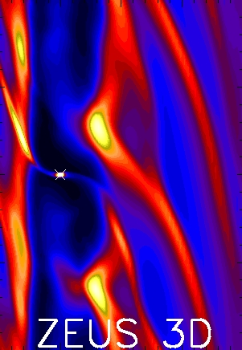
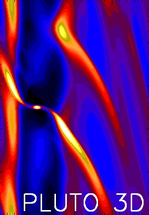
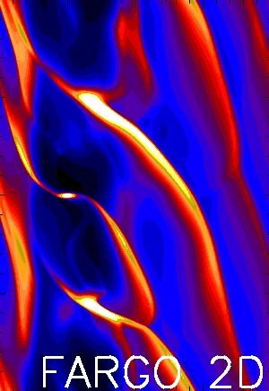

Hello there.
I am an astrophysicist currently
working as a post-doctoral fellow at the Canadian Institute for
Theoretical Astrophysics in the University of Toronto. Please
click the links at the top for more information.
Images above are examples of the
`gravitational edge instability' - a gravitational instability
in astrophysical disks that is associated with edges or gaps.
The GEI is well estabilished in the galatic context for stellar
disks, but it's only recently made its way into protoplanetary
disks. Gaps opened by giant planets in massive disks may be
unstable to the GEI, even if the disk is stable according to the
Toomre criterion. The GEI significantly affects planet
migration, and may be an additional issue of concern for
theoretical models that explain planet formation on wide orbits
by disk fragmentation.